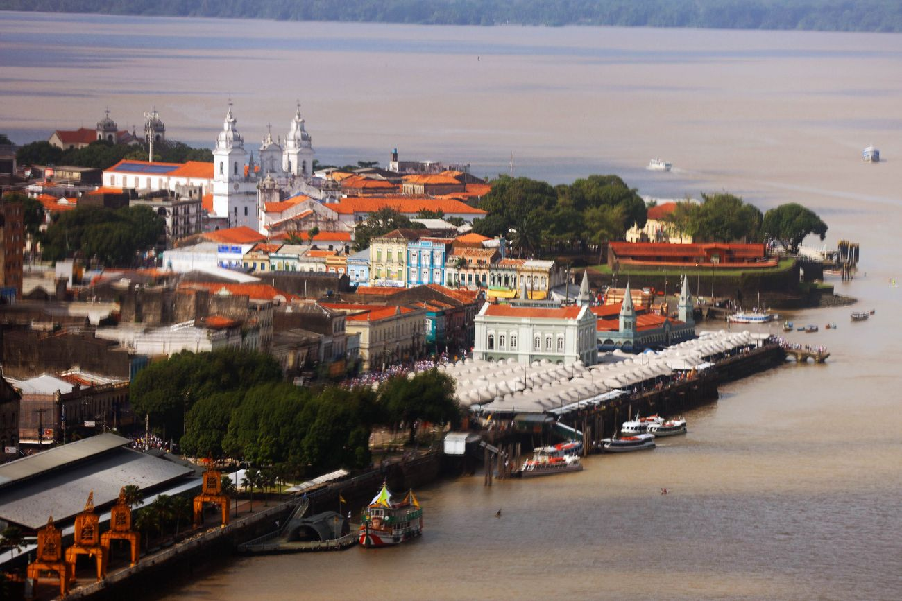
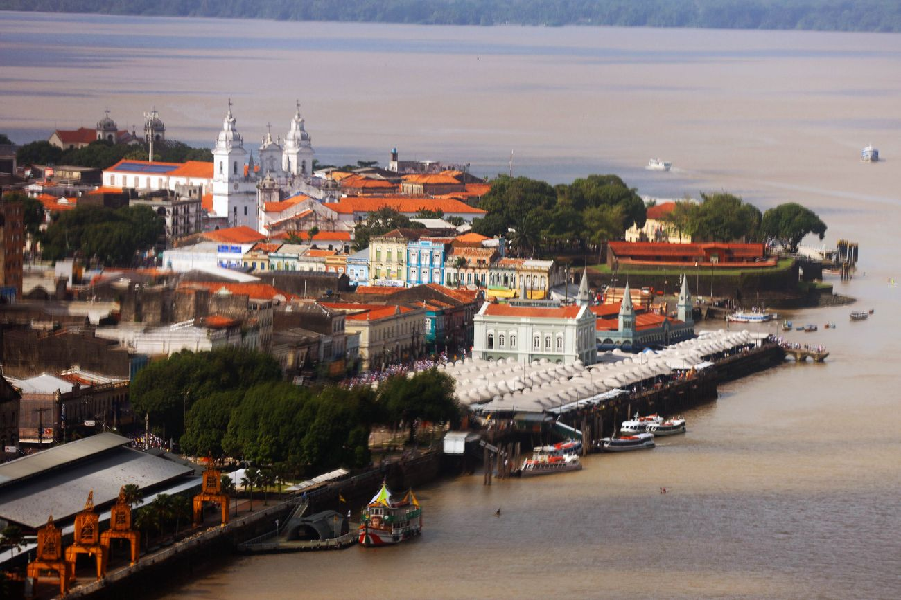

A First Look at Belém
 


Belém is a vibrant city in northern Brazil, as the capital of the state of Pará, it’s a place full of life, color, and culture. Walking through its streets, you can feel the history in the old colonial buildings and charming churches that date back to the 1600s. The city is also famous for its incredible food — a unique blend of Indigenous, African, and Portuguese flavors that you won’t find anywhere else. A visit to the Ver-o-Peso market is a must: it’s loud, lively, and full of everything from fresh Amazonian fruits to herbs and fish straight from the river. Surrounded by water and rainforest, Belém offers a perfect mix of urban energy and natural beauty. Whether you’re exploring by boat, enjoying a local dish, or just watching the sunset by the bay, Belém has a warm and welcoming spirit that stays with you.
Destinations


Hotels


Restaurants